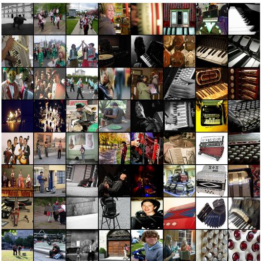

(c) Side-by-side comparison of ImageNet-1K test performance for the highly valued green (l(c) Side-by-side comparison of ImageNet-1K test performance for the highly valued green (left) points created using classbalanced partition matroid constrained submodular maximization on the facility location, red (middle) created using stratified random sampling to achieve class balance, and blue (right) class-balanced heuristic partition matroid constrained submodular minimization again on the same facility location function. These three plots show the same information as in Figure 27a but is expanded to three side-by-side plots for clarity. Figure 27: The results (top row) are the same as those presented in Figure 1 and the bottom row is expanded out to three side-by-side plots to show more details more clearly.这张图/表用于判断 How Much Is a Dataset 的实验收益来自哪里。重点看替换、消融或跨模型设置下趋势是否一致，而不是只看单个最高分。

(b) Low-value (low facility location score) subset (blue X in Figure 1 just for accordion)(b) Low-value (low facility location score) subset (blue X in Figure 1 just for accordion) Figure 20: Accordion. Images in the high-value (high facility location score) subset (above left 8 × 8 grid, and green X in Figure 1) are canonical examples in which an accordion is clearly the, or at least a, central subject. In contrast, the low-value (low facility location score) subset (above right 8 × 8 grid, and blue X in Figure 1) contains many much more atypical images with confounding objects. For example the image in row 6 column 1, contains several other instruments and the accordion is hardly visible. In row 5, column 1, we see an entire band which includes guitar and people, and a better single label for that image might be “band” or “musical group” (which are not ImageNet-1K classes). Other images, such as the ones shown in row 8 column 7, row 8 column 8, and row 1 column 5, appear to not contain anything resembling the totality of the accordion “concept” at all and may simply be instances of label noise, or might be extreme closeups of the buttons in a button accordion, which are not visually similar to the more canonical or typical examples of what defines an accordion visually.这张图来自论文 PDF 的结构化抽取。当前用于辅助理解 How Much Is a Dataset 的方法或实验，请结合正文精读段落一起看。